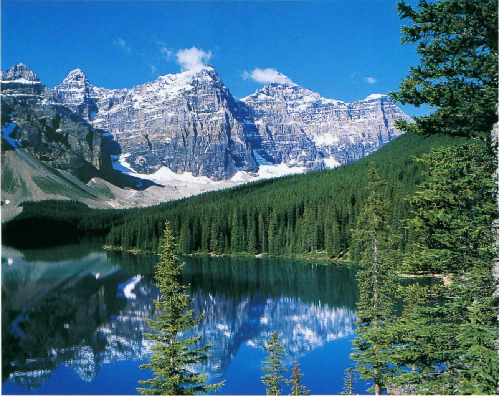
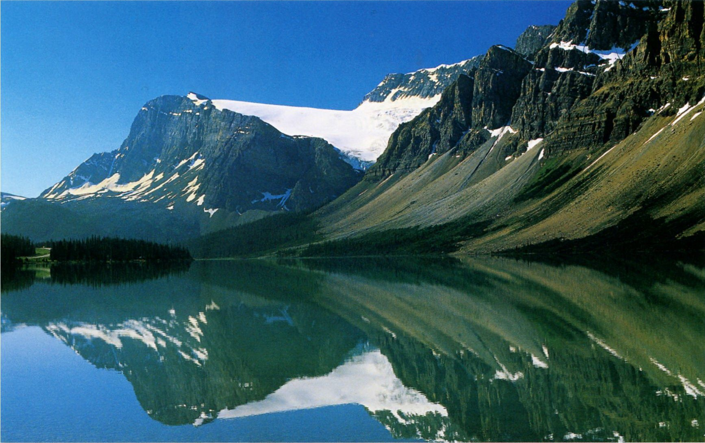
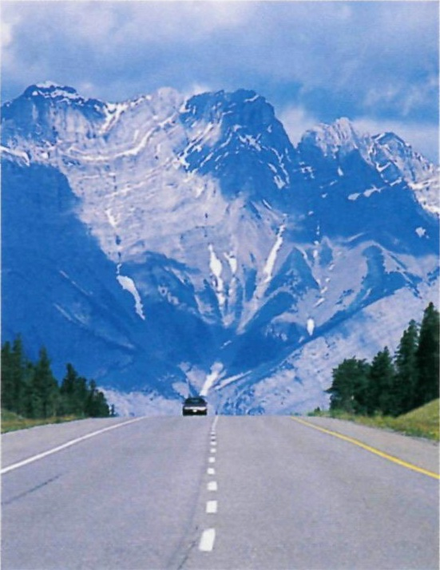

- Самые древние следы европейских переселенцев на американской почве найдены близ поселка Ланс-о-Медовс, на острове Ньюфаундленд. Здесь селились викинги, которые в поисках новых территорий зашли в воды этого острова еще в X в.
- Национальный девиз Канады, начертанный на ее гербе, гласит: A Mari Usque Ad Маге, что в переводе с латыни значит — «От моря до моря».
- В канадских ресторанах можно угоститься медвежьим сушеным мясом, паштетом из бобра, а также другими фирменными блюдами из мяса. Однако жесткие канадские законы против браконьерства, предусматривающие тюремные сроки и огромные штрафы, а также серьезная работа природоохранных служб позволяют надеяться, что это мясо добыто законным путем.
- Считается, что Гудзонов залив был открыт английским мореплавателем Генри Гудзоном в 1610 г. В этих местах он и погиб, высаженный в 1611 г. на берег взбунтовавшейся командой
КАНАДА
От Атлантики до Тихого океана

Обширная территория Канады, второй по площади после России страны мира, до сих пор недостаточно изучена. Для сохранения природных богатств канадцы создали систему национальных парков. Старейший национальный парк — Банф, расположенный в Скалистых горах в провинции Альберта, существует с 1885 года
САМЫЙ МЯГКИЙ СЕПАРАТИЗМ
Канада — демократическое государство с двумя государственными языками, хотя межкультурные противоречия остаются и здесь. В 1995 г. французское население провинции Квебек проголосовало за то, чтобы остаться в составе Канады, с очень небольшим перевесом голосов.
- Квебек
- Монреаль
- Оттава
- Ниагарский водопад
- Официальное название: Канада, член Британского Содружества.
- Столица: Оттава.
- Крупнейшие города: Монреаль, Калгари Эдмонтон, Квебек, Торонто, Ванкувер.
- Денежная единица: канадский доллар.
- Религии: по последней переписи 77% канадцев считают себя христианами, их большую часть составляют католики (43,6% канадцев); примерно 17% канадцев не связывают себя ни с какой религией, а остальное население (6%) исповедует отличные от христианства религии (чаще всего ислам).
- Язык: английский является родным для 57,8% населения, французский — для 22,1%, 98,5% канадцев владеют хотя бы одним из официальных языков.
В южной части страны климат умеренный, теплый, во внутренних областях — континентальный, холодный, на самом севере — полярный. Западное побережье теплое — за счет Северо-Тихоокеанского теплого течения. На восточном побережье ощущается влияние холодного течения вдоль полуострова Лабрадор. В Кордильерах — горный климат с обильными снегопадами.
Останется ли Канада и через десять лет такой же страной, как сейчас? Ответа на этот вопрос пока нет. Самая большая провинция Канады — Квебек настаивает на признании ее независимости. Если учесть, что здесь проживают 85% франкоязычных канадцев, то острота вопроса становится понятной. За последние десятилетия здесь проведено несколько референдумов, чтобы решить вопрос, оставаться ли провинции в составе канадского государства. Канадское правительство каждый раз настаивает на сохранении нынешнего положения. Так, перед последним референдумом, прошедшим в 1995 г., премьер-министр Канады Жан Кретьен обещал квебекцам в случае отделения немалые проблемы. Они лишились бы канадского паспорта и столкнулись с необходимостью получать визы в посольствах иных стран. Предприниматели мятежной провинции потеряли бы все преимущества Североамериканской зоны свободной торговли — НАФТА. А также центр был готов исключить Квебек из зоны канадского доллара. Возможно, именно поэтому результаты референдума оказались в пользу федерального правительства. 50,58% (2 362 648 чел.) из числа всех проголосовавших высказалось против отделения Квебека от Канадской Федерации и 49,42% (2 308 360 чел.) — за отделение и создание суверенного государства. Поскольку перевес оказался столь незначительным, у сепаратистов большие надежды на следующий референдум. Понять можно и тех и других. Квебек мощная в промышленном отношении провинция, способная существовать вполне безбедно. Историческая обида тех французов, которые считали условия Парижского мирного договора от 1763 г., по которому Франция отказывалась от всяких притязаний на Канаду, несправедливыми, видимо, сохраняется даже на протяжении столетий. Когда французские и английские колонии, возникшие в начале XVII в. вдоль реки Святого Лаврентия, были объединены под английским управлением, многие французские колонисты почувствовали себя нелучшим образом. Однако канадский сепаратизм — самый мягкий в мире. Страна в этом вопросе обходится без насилия. Тем более что права любых меньшинств учитываются в обязательном порядке. Все вопросы с центром решаются мирным путем. При этом сепаратистам приходится учитывать позицию примерно 340 000 индейцев и 35 000 эскимосов, чьи голоса сыграли решающую роль в последнем референдуме о будущем Квебека, когда большинство коренных обитателей здешних мест высказались против отделения. Более того, они заявили, что в случае отделения Квебека потребуют отделения от самого Квебека их национальных территорий.
- Площадь: 9 984 670 км2, из них на сушу приходятся 9 093 507 км2.
- Население: 34 158 000 (2009 г.), из них 1,5% — коренные жители, индейцы и эскимосы.
- Самая высокая точка: гора Логан (5959 м).
Канада — один из флагманов
мировой промышленности. Доля
Канады в мировом производстве деревянных
строительных материалов составляет 15,6%,
целлюлозы — 10,9%, алюминия — 10,7%,
асбеста — 41,3%, никеля — 20,2%, цинка —
16,3%, в добыче урановой руды — 34,7%.
Канаде принадлежит пятое место в мире по
выработке электроэнергии и второе — по ее
количеству на душу населения.
ЗемледелиеКанада — второй по величине
в мире экспортер зерна — 17% мировой
торговли.
Туризм около 18 500 000 иностранных
туристов в год.

Озеро Мореин в Долине Десяти Вершин в национальном парке Банф окружают ослепительные снежные пики гор.
СТРАНА СРЕДИ ОКЕАНОВ
Территория Канады почти равна территории Европы,но плотность населения здесь значительно меньше.
К анада занимает почти всю северную часть Северной Америки. В ширину эта огромная страна раскинулась более чем на 7700 км и включает шесть часовых поясов. В центральной части страны находится плато Канадского щита, которое образовалось из магматических и метаморфических пород в ледниковый период, а ныне сплошь заросло лесами. Облик этой части страны — тундра, хвойные леса и озера. Севернее, за Полярным кругом, охватывающим более половины территории Канады, преобладает холодный континентальный климат. Это — царство воды и льда, которое занимает 5 000 000 км2. Территория южнее Гудзонова залива — между Великими американскими озерами и рекой Святого Лаврентия составляет промышленную зону Канады. К западу от штата Онтарио простираются холмы и обширные равнины, составляющие житницу Канады. Между тундрой и Тихим океаном возвышаются два наиболее молодых горных хребта: Скалистые горы и Береговые горы. Вдоль каменистого берега Тихого океана проходит граница с Соединенными Штатами Америки. Граница с Аляской вдается глубоко внутрь континента, прорезая тихоокеанское побережье вплоть до Британской Колумбии. Хотя плотность населения в Канаде невелика, эту цифру — 3,7 чел. на км2 — стоит воспринимать исключительно как статистику. Поскольку на юге страны, примерно на 5% ее территории, живут две трети всех канадцев. Наиболее заселенная часть Канады — это «лента» не далее 160 км от канадской границы с США. И здесь надо говорить, скорее, о перенаселенности. Поскольку отмечены факты такой же промышленно-сельскохозяйственной нагрузки (и даже перегрузки!) на окружающую среду, как в наиболее промышленно развитых районах планеты. А вот огромные незаселенные территории на севере и в средней части страны, где климат иногда вполне подходящий для жизни людей, остаются почти без дорог и иных коммуникаций. Канадцы с юга сюда переселяются неохотно. Это — мир для любителей первозданной природы и экологического образа жизни. Отсутствие средств у правительства Канады на масштабное освоение этих земель сохраняет богатые природными ресурсами (лес, гидроэнергия, нефть, газ, уголь и чуть ли не вся таблица Менделеева) территории для будущих поколений канадцев. Существовавший в 1960-70-х гг. проект освоения и заселения «Среднеканадского коридора» отложен в архив. И на 70% территории страны проживает всего 1,5% ее жителей. В основном это коренные народы — индейцы и эскимосы, а также приезжие жители маленьких поселков при рудниках, сотрудники научных экспедиций, национальных парков, охотники.

Дорожная сеть хорошо развита только в южной части страны. Из отдаленных северных провинций лучше всего добираться самолетом